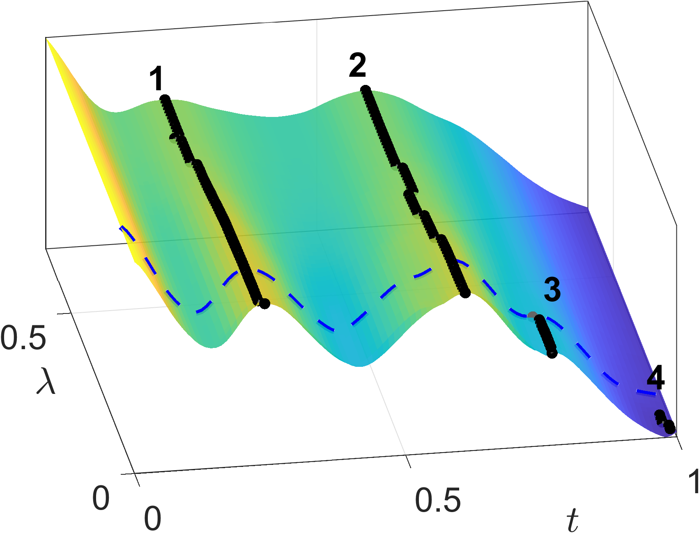
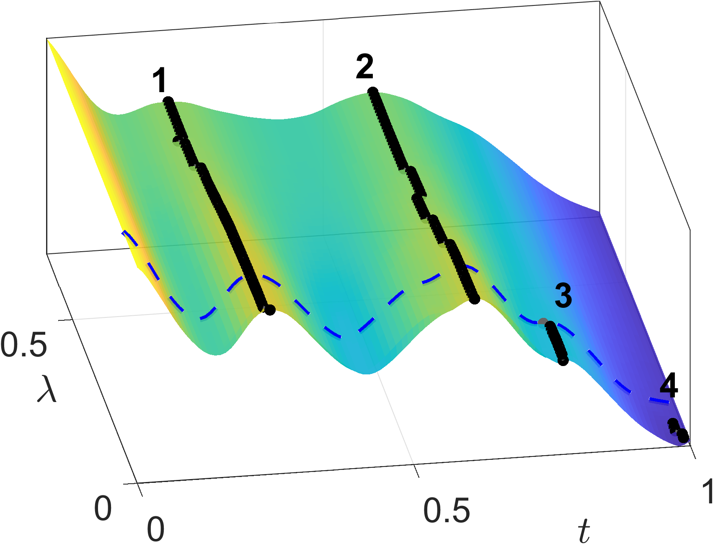
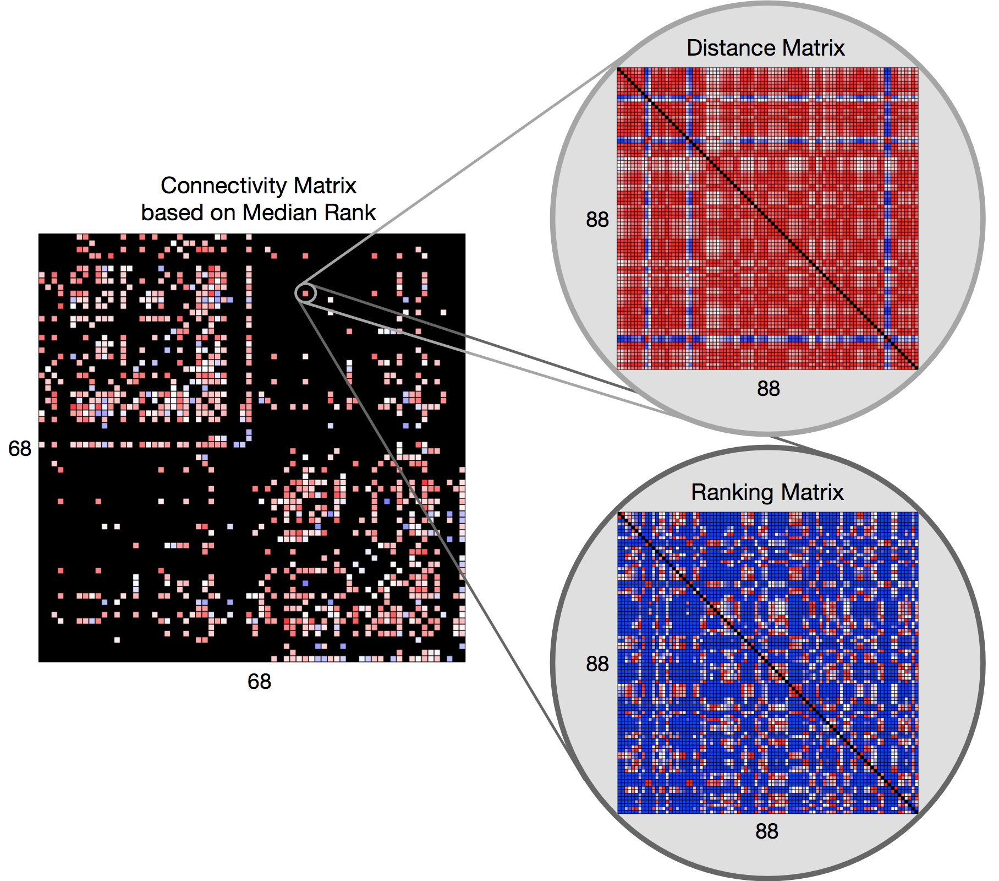

Woo Min Kim
Table of Contents
TECHNICAL EXPERTISE
PROJECTS
Functional Data Analysis
Functional data — curves, shapes, and other complex structures — arise in fields like biology, medicine, and the social sciences. My primary research focuses on functional registration using the Fisher-Rao metric within a Riemannian manifold framework under noisy condition .
Functional registration addresses phase variation (temporal misalignment) to separate meaningful structural patterns from timing differences.
Consider a smooth function, $f(t)$. The left plot shows the warping function $\gamma(t)$, and the right plot shows the aligned function $f(\gamma(t))$.
By aligning corresponding features—such as peaks and valleys—across samples, we can analyze the pure shape variability (amplitude) independent of time, recovering the true underlying signal structure that would otherwise be lost in conventional averaging. To address computational challenges, we utilize the Square Root Velocity Function (SRVF) representation (Srivastava et al., 2011).
▫ Peak Persistence Diagrams
"A Visual Analytics Tool for Robust Signal Recovery"
PPD solves the challenge of distinguishing true trends from noise in complex datasets. It replaces manual guesswork with a data-driven visualization, ensuring reliable model performance.
- Automated Parameter Tuning: Eliminates trial-and-error by visually identifying the optimal balance between noise reduction and signal preservation.
- Validated Performance: Achieved a 25–60% reduction in error (RMSE) in controlled benchmarks compared to state-of-art baseline.
- Real-World Application: Successfully applied to energy demand forecasting and COVID-19 trend analysis, recovering clear and interpretable patterns where traditional methods failed to separate signal from noise.
This work is published in IEEE Transactions on Signal Processing, 2025.
Raw Data
Raw observations with strong phase variation and noise.
.png)
Challenge
Fully aligned data can over-align, obscuring meaningful structure.
.png)
Solution
PPD visualizes topological structure and guides optimal tuning.
.png) 

Result
Recovered signals align with ground truth and reveal hidden patterns.
.png)
▫ Bayesian Functional Alignment
"A Probabilistic Framework for Robust Signal Recovery under Noise"
We are developing a Bayesian framework for functional registration to handle noisy and misaligned data more robustly than classical optimization methods.
Unlike DTW, which finds a single global optimum, the Bayesian approach models the full posterior distribution of warping functions. This allows us to incorporate prior information and capture multiple plausible warping solutions.
- Probabilistic Modeling: Unlike deterministic methods that force a single "best fit," this approach models the full posterior distribution of warping functions to quantify uncertainty and prevent over-alignment.
- Informed Priors: Utilizes covariance operators to inject domain knowledge, strictly constraining time-warping to physically plausible windows and avoiding unrealistic distortions.
- Superior Accuracy: Outperforms state-of-the-art baseline with up to 70% lower L2 estimation error, successfully recovering sharp signal peaks even from highly corrupted data.
Raw Data
Noisy Observations
Raw COVID-19 death rates show phase variation that hides the shared wave across countries.

The Strategy
Informative Priors
A Gaussian process prior constrains warping to plausible time windows (yellow zones).

The Mechanism
Probabilistic Warping
We model a posterior over warpings to capture uncertainty and avoid over-alignment.

Result
Robust Recovery
Recovers sharp peaks with fewer artifacts and ~70% lower error.

Social Network Analysis via Bayesian Method
▫ Hierarchical Latent SVD Model
In social network analysis, Latent Distance Models (LDMs) embed nodes in a latent space to uncover structure. Hoff (2008) introduced eigenmodel-based LDMs to account for homophily (the tendency of similar nodes to connect).
Homophily helps explain common patterns in social networks, including transitivity (“a friend of a friend is a friend”), balance (“the enemy of my friend is an enemy”), and the formation of cohesive subgroups of nodes. (Hoff 2008)
This project applies Bayesian hierarchical modeling to latent SVD models to induce shrinkage effects and improve parameter estimation by borrowing strength across the network structure. A short report is available.
Topological Data Analysis
Topological features simplify complex geometric information, allowing for a clearer understanding of brain connectivity. By applying persistent homology to multi-level white matter tractography, we capture essential structural patterns like loops and voids that remain robust across multiple scales.
▫ Topological Feature Extraction With Human Brain Connectome
"A Rank-Based Topological Approach to Brain Fingerprinting"
This exploratory project analyzes brain connectivity using 0-dimensional persistent homology on white matter endpoints. We shift the focus from absolute connection strength to relative structural uniqueness within a population.
- Population-Based Context: Instead of analyzing single brains in isolation, we leverage an 88-subject cohort to define a normative baseline, interpreting connectivity as a relative deviation from the group.
- Rank-Based Embedding: We transform topological distances into median rank matrices. This measures "identifiability"—quantifying how distinct a specific connection is compared to the general population.
- Exploratory Insights: While successful in capturing individual brain fingerprints, the rank transformation abstracted away fine trajectory details, pointing towards future hybrid topological models.
HIGH-DIMENSIONAL NETWORK CONTEXT
3D Tractography Visualization
The figure displays 3D white matter streamlines connecting a single pair of Regions of Interest (ROIs). This geometric structure represents just one entry in our dataset: [3D Tracts] × [68×68 Connectivity Matrix] × [88 Subjects], capturing the full structural complexity of the brain.

TOPOLOGICAL TRANSFORMATION
From Geometry to Topology
We translate raw 3D geometric data into robust topological descriptors using 0-dimensional persistent homology (H0). This process tracks the multiscale clustering of fiber endpoints, generating a "persistence barcode" that captures the intrinsic structural organization while filtering out noise and rigid coordinate variations.
Rank-Based Feature
Median Rank Connectivity Matrix
Topological differences are converted into rankings, and the median rank is assigned to the subject's 68×68 ROI Matrix. A high rank indicates a unique "fingerprint," while a low rank suggests a common pattern.
PUBLICATIONS
- Kim, W., Dasgupta, S., Turaga, P., and Srivastava, A. (2025) "Peak Persistence Diagrams for Shape-Based Signal Estimation," in IEEE Transactions on Signal Processing, doi: 10.1109/TSP.2025.3613678
- Kim, W., Ma, Y., Wu, W. (2025). "Bayesian Registration and Signal Estimation with Compositional and Additive Noises", in Computational Statistics and Data Analysis. (Under review)